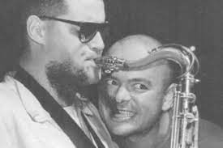

anecdotas
Quiero dinero
Después de trabajar algunos años con Daniel Grinbank como representante, Sumo decidió lanzar su
propia agencia y manejarse de manera independiente. En uno de los recitales que acordó en esa
nueva etapa, la banda liderada por Luca Prodan iba a presentarse en el boliche La Fábrica, en
Rosario.
El empresario local había pagado el 50% del caché de adelanto y debía pagar el
resto antes del recital. Cuando el italiano y el manager, Timmy McKern, se dirigieron a la
oficina de la discoteca para cobrar ese saldo, se encontraron con un problema. "Hay un fucking
problema", advirtió el cantante al resto de la banda, que se encontraba afuera de La Fábrica,
esperando en el micro: el dueño no tenía la plata.
"Nos quiere pagar con una bolsa de
anfetaminas", explicó McKern. Ante el desconcierto, Prodan remarcó que estaba todo listo para el
recital y propuso tocar de todos modos, por respeto al público. Sumo brindó todo su espectáculo
en Rosario y, en la mitad del show, se paró todo: Luca explicó a la gente lo que había sucedido,
escrachó al empresario y continuó con la máquina musical que era Sumo.
Tras el recital, los
músicos cobraron su bolsa de anfetaminas y la tiraron por el camino.
un publico canino
En la versión del tema "Divididos por la felicidad" grabada en el disco homónimo, de 1985, la
letra escrita por Luca Prodan tiene un agregado misterioso: "Agosto, Otto, Perra", dice el
italiano.
¿Qué significan esas tres palabras metidas por el líder de Sumo en la canción? No
son ni más ni menos que los nombres de tres mascotas que tenía el manager de la banda, Timmy
McKern, en su casa de Córdoba.
Otto y Perra eran los padres de Agosto, que solían sentarse
frente al ventanal que da a la montaña para ver el ensayo de los Sumo.
Durante una de esas
pruebas, Luca Prodan notó la actitud expectante de los animales y los comenzó a llamar, algo que
luego quedó incluido en el tema que originalmente había escrito en Inglaterra junto a la primera
baterista de Sumo, Stephanie Nuttal.
Acústico en la comisaría
Alberto "Superman" Troglio fue el último baterista de Sumo y en algunas ocasiones oficiaba de
chofer,
al poner a disposición de la banda su Chevrolet Impala modelo 59, cola de pescado, motor V8
Un
día, yendo a un recital en San Nicolás, los músicos cruzaron un semáforo en rojo y tuvieron la
mala
suerte de que detrás iba el intendente local, quien advirtió a la Policía sobre la infracción
del
aparatoso vehículo.
Ante la intervención de los uniformados, el Impala y sus ocupantes
fueron a
parar a la comisaría, en donde los policías se enteraron que se trataba de la banda que iba a
tocar
en un reconocido boliche de la zona.
En ese contexto, Luca Prodan terminó tocando
canzonetas
italianas con la guitarra en el escritorio del comisario y los policías, cebándoles mate al
resto de
la banda. En medio de ese recital acústico en la Comisaría, apareció el dueño del boliche y los
retiró, para llevárselos al show.